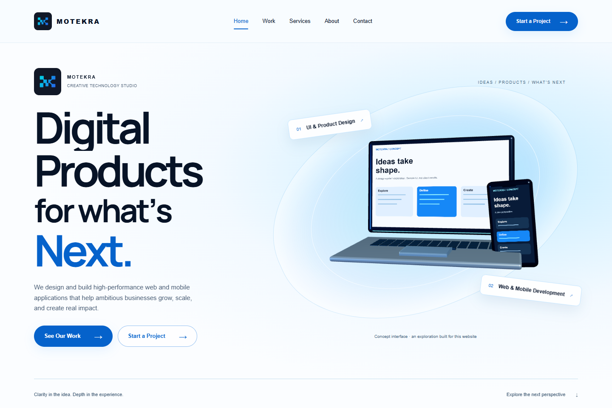
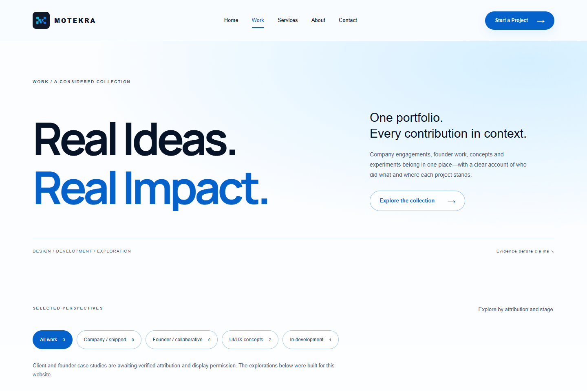
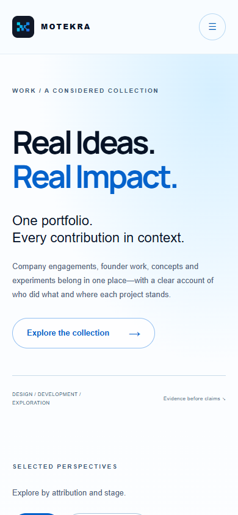
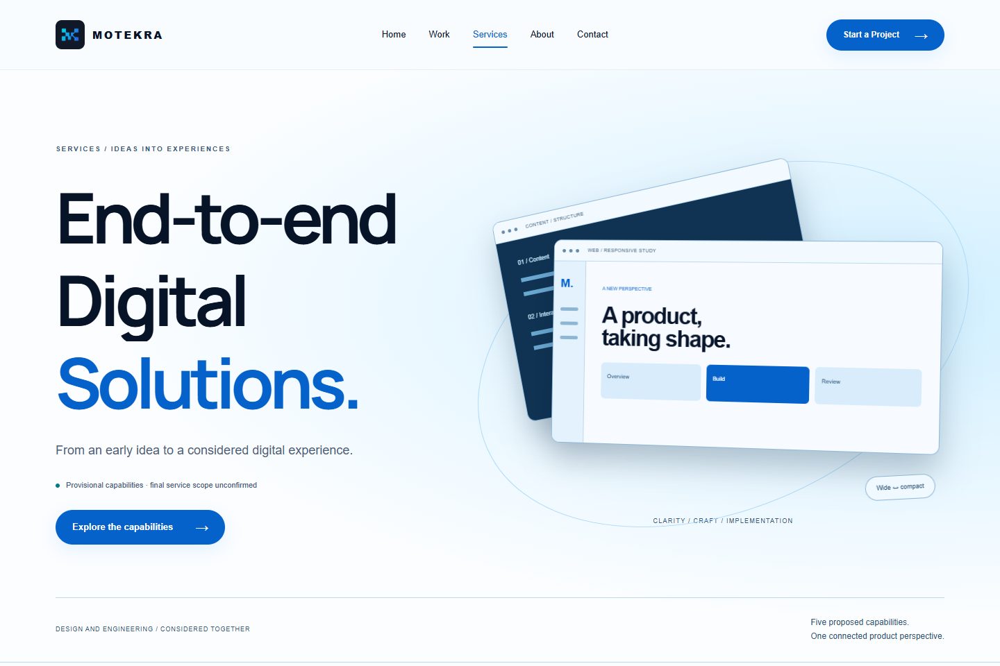
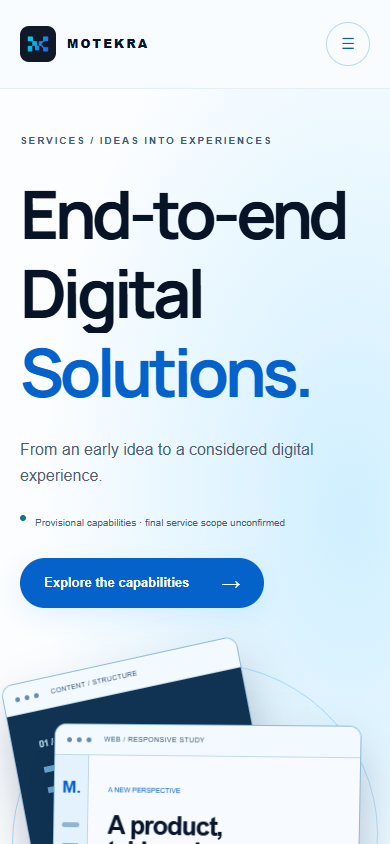
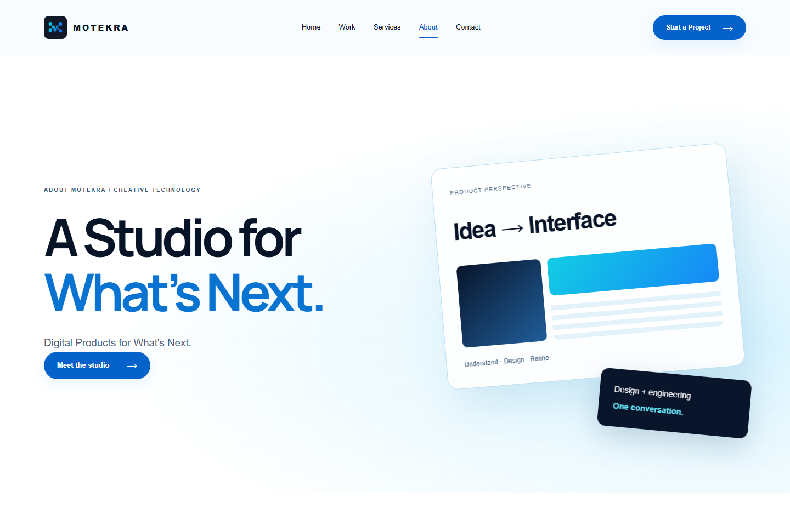
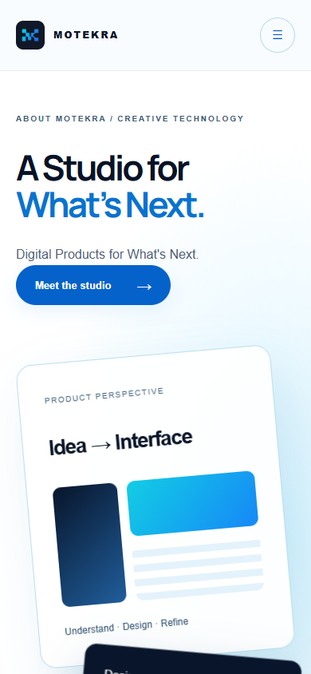
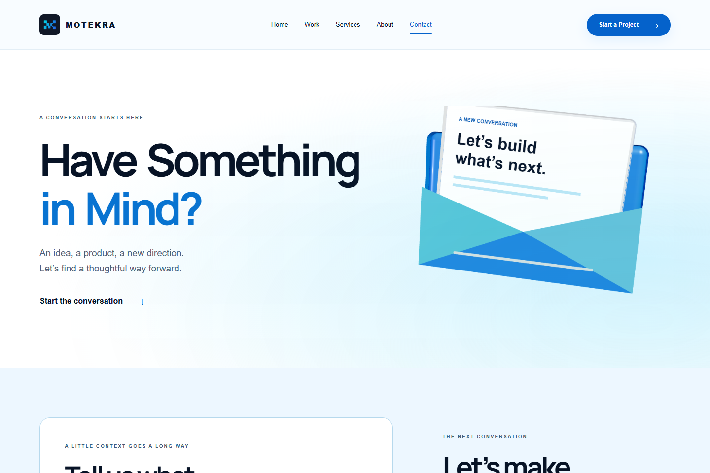

26 October 2026 · Phase 09 remains open. Screenshots are QA evidence, not approved production project assets.
Findings · Prioritized correction prompt · Supplied five-frame reference








Visible at 1–2s, hidden around 3s, restored at 4–5s. Preserve kinetic typography while correcting delayed initialization.
All metrics and limitations · Scene lifecycle matrix · Fresh rendered-HTML audit · Unreproduced anchor observation